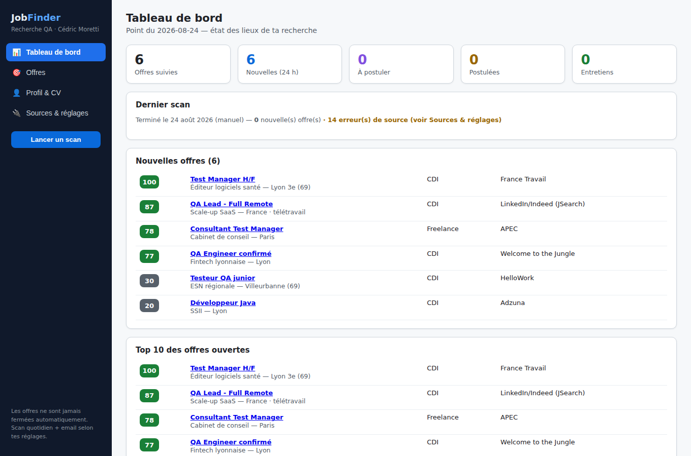
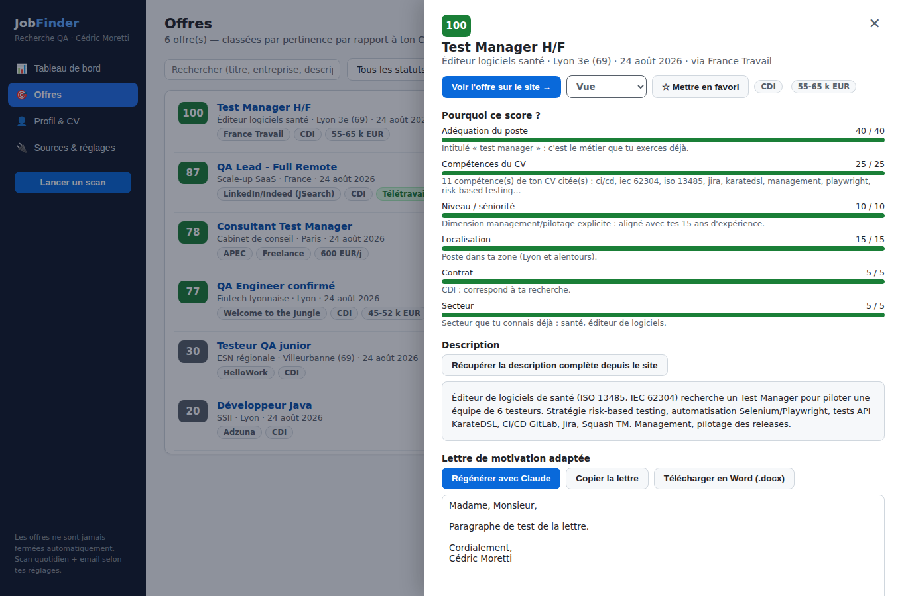
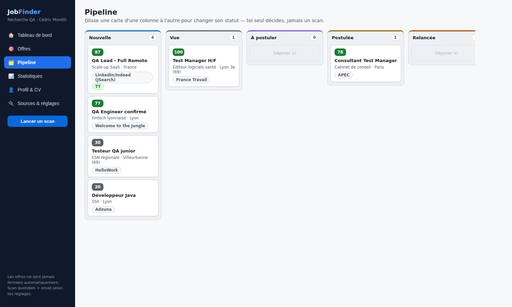
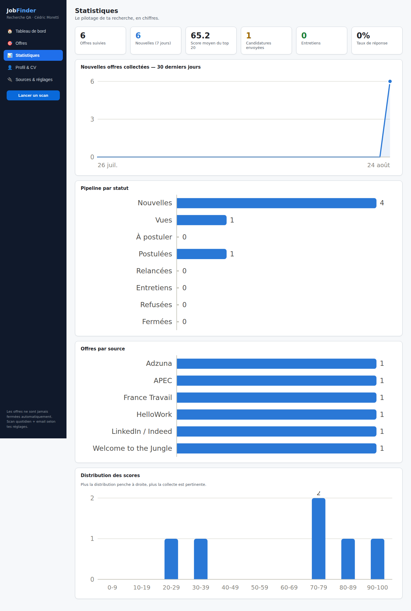

L'application qui cherche à ta place : 6 sources d'offres d'emploi scannées chaque matin, un classement 0-100 calibré sur ton CV, et des lettres de motivation générées par Claude.
La démo tourne dans ton navigateur avec des données d'exemple. L'application complète s'installe en local (« Ouvrir mon appli locale » fonctionne si elle est lancée).
France Travail, Adzuna, JSearch (offres LinkedIn / Indeed via Google for Jobs), Welcome to the Jungle, APEC, HelloWork — dédoublonnées automatiquement.
Score 0-100 expliqué critère par critère : adéquation du poste, compétences citées, séniorité, localisation Lyon / remote, contrat, secteur.
Ta session Claude Code affine le score des meilleures offres et rédige une lettre de motivation adaptée à chaque annonce, à partir de ta lettre type.
Scan automatique chaque matin, tableau de bord « état des lieux » et email récapitulatif des nouvelles offres classées.
Statuts (à postuler, postulée, relance, entretien…), favoris, notes et historique — piloté par toi seul.
Une offre n'est jamais supprimée ni fermée par un scan : si elle disparaît de sa source, elle est simplement marquée « plus en ligne ? ».




Python 3.11+ (coche « Add python.exe to PATH ») et Node.js LTS.
git clone https://github.com/Opaland/Job-Finder.git puis
git checkout claude/confident-ride-weseu3 et double-clique sur start.bat —
tout s'installe et l'appli s'ouvre sur http://127.0.0.1:8000.
France Travail, Adzuna et JSearch dans le fichier .env —
guide pas-à-pas dans le README.
Sans elles, seules les sources sans clé sont scannées.
« L'idée : te mâcher le travail de recherche et ne présenter que les offres les plus pertinentes, sans jamais fermer une offre à ta place. »